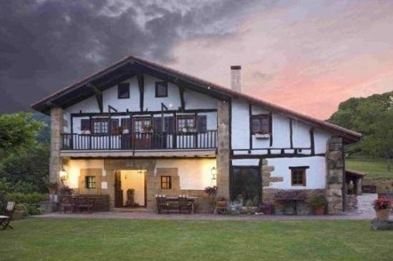
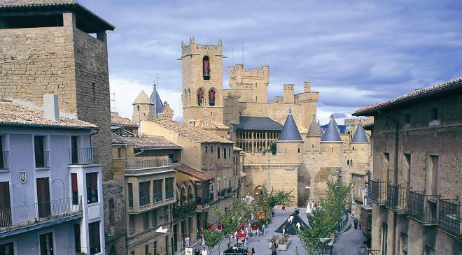
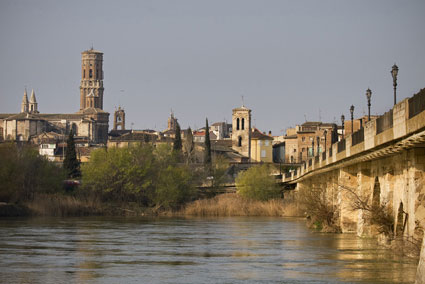
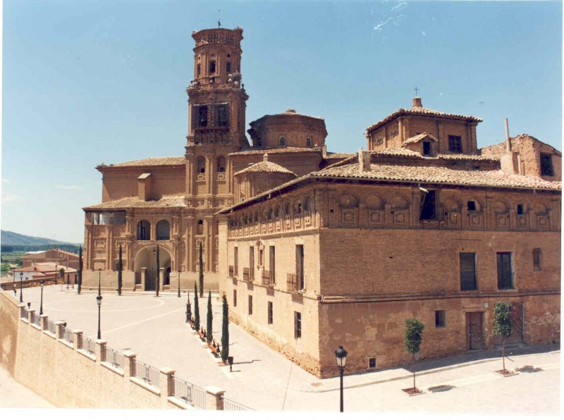

Pueblos y ciudades
Navarra y alrededores tiene una gran variedad y riqueza artistico monumental. Muchas veces va unido naturaleza con urbe. Te ayudaremos a recorrerla tranquilamente, paseando, en bici o corriendo.
Desde ciudades como Pamplona, Tudela, Estella, Sangüesa y otras más pequeñas, pero no por ello menos interesantes, como Olite, Viana, etc. Sin olvidarnos de las más cercanas como San Sebastian, Zaragoza, Tarazona, Soria, Logroño y aquellas de más allá de los Pirineos.
No hay que olvidar, los pueblos y ciudades durante su época festiva, siendo San Fermín, el mayor exponente de las fiestas de nuestra tierra.
Tu visita a la ciudad será diferente.

Caserio

Castillo Javier

Cerco de Artajona

Olite

Pamplona

Puente la Reina

San Fermín

Tudela
